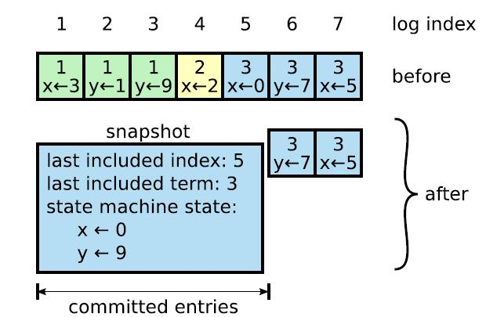

本实验要求我们实现 Raft 算法，包括其领导人选举、日志复制、快照等关键要素。
参考资料
- 有一个非常通俗易懂的Raft 可视化网站；
- 描述 Raft 算法的论文；
- 我的另一篇文章是对该论文的解读；
- 当然，这门课的 TA 编写的 RAFT GUIDE 也不容忽视。
PART A-Raft Leader Election
PartA 主要负责 Raft 节点超时选举的流程。我把这一过程描述为以下步骤：
- 节点最开始的身份统一初始化为 Follower。每个节点自身包含一个定时器，逐 tick 增长，在 timeout 时间间隔内满足以下条件：
未投票给其它节点；
未收到当前 Leader 的 any RPC；
未发起选举；
则从 Follower 变为 Candidate，增加
CurrentTerm，并请求其它各个节点（下称 Peers）给自己投票；
- Peers 收到
requestVoteRPC后，对该 RPC 进行处理，并按照一定规则判断是否能够同意其成为 Leader； - 如果 Candidate 收到了超过半数的赞成票（自己也算一票），则成为当前 Term 的 Leader；
至此，一个完整的选举过程就结束了。另外，节点成为 Leader
后，需要定期向其它 Peers 发送 AppendEntriesRPC
以稳固地位，也就是所谓的 HeartBeat。
这一部分并不难，只需修改
Raft.go即可，而解决它的关键在于 paper 中的 Figure2，为我们提供了非常有用的结构体定义以及规则。
结构体定义
1 | // 每个日志条目存相应的索引、term 以及操作 |
特别需要关注的是这里的 nextIndex[] 和
matchIndex[] 两个字段。这两者仅在当前节点为 Leader 时需要被
focus on。它俩并不是简单的 next = match+1
的关系，之所以分出两个字段，是因为它们分别代表不同意思。
nextIndex[i]
指的是下一次同步日志时需要从哪一条开始发送给节点
i。同步日志并不一定是在每个 Heartbeat 时刻进行，当某个 Peer
因为日志冲突而拒绝了某次日志复制时，我们需要立即修改
nextIndex[] 以重新进行日志复制。
当 Heartbeat1 时刻发给某 Peer 的同步日志请求被拒绝后，可能需要多次修改
nextIndex[]重发。由于所有日志复制都是基于nextIndex[]，所以即使到 Heartbeat2 时刻 Peer 仍未完成同步，此时发出的 Append Entries 也是正确的。只不过现在 Leader 要同时发出多个 Append Entries：Heartbeat1 未成功的和 Heartbeat2 新开始的。
matchIndex[i] 指的是作为 Leader
已知的节点 i 持有的最新日志号。每当一个 Peer
成功进行了日志复制时，都需要更新该字段。
知道这一信息有什么用呢？在 6.824 的设计下，一个分布式节点收到一条来自客户端的请求时，都会将该请求打包成日志格式通过 Raft 层同步给其他节点，一旦某一条日志被过半节点持有，该日志就会被视为 Committed。Leader 需要不断更新这一信息并告知其它节点哪些日志已经 commit 了（这一信息一般捎带在 Heartbeat 里），那么对于 Committed 的日志，分布式节点就会认为其可靠，并提取日志中的请求并应用到存储中了，我们把这操作称为 Apply。
并且，并不一定总是有
next = match+1，因为每个节点都会在刚上任时将
matchIndex[] 初始化为全 0，而 nextIndex[]
初始化为其当前持有最后一条日志的 lastLogIndex+1。
当然，一旦 Follower 成功同步，它对应的两个字段会被更新为满足
next = match+1 = lastLogIndex+1。
Timer
根据算法要求，需要选举定时器和心跳定时器各一个。如果当前为 Leader，则只处理心跳定时器的消息；反之，则只处理选举定时器的消息。当然，处理完了还得进行重置。
尽管 6.824 提了一嘴不要用 go time 库里的 timer，但感觉应该是怕学生不会用用错。
由于 lab 要求 1s 内最多发十次心跳，所以 HeartBeatTimeOut 设置为 100ms。
1 | func (rf *Raft) ResetTimer(isleader bool) { |
Candidate 发送投票请求
理想情况下，Leader 发一次 voteRequest，Peer 收到后发送回复并被 Leader 接收，在一个 RTT 就能解决问题。但由于网络的不稳定性，可能存在丢包，Leader 发出去的不一定被 Peer 收到，Peer 的回复也不一定被 Leader 确认。那么此时就需要 Leader 不断发送 RPC 直至收到回复，保证选举严格正常进行。
那么在这种策略下，就不得不谈谈如何处理过期的消息。这里的过期有两层含义：
- 同一 Term 中已经发过一遍；
- 上一 Term 甚至更早的；
对于 Peer 而言，所有来自同一个 Candidate 的同一 Term
的投票请求，如果一开始就拒绝，那么将一直保持拒绝，如果 Term
过期就更不用说了；如果对于第一条同意，那么 Peer 会修改自己的
voteFor，下次遇到同一人发来的请求时，如果 Term
也对的上，那就直接同意。
对于 Candidate 而言，每次收到 reply 时，需要保证自身处于和发送请求时刻一样的状态下才能接收，即检查
- 当前状态是否为 Candidate；
- reply 的 Term 是否与节点当前 Term 一致；
一旦有一个条件不满足，就认为该 reply 已过时并丢弃。对应现实情况为：若 Candidate 成功当选（破坏条件 1）或收到了一个更新 Term 节点的回复而更新自己的状态（破坏条件 1, 2），说明这次选举已经可以结束了，再进行下去没有意义了，后续收到所有的该次选举产生的 reply 都作废。
这里不需要处理迟到的重复 grant，因为 gRPC 框架下，一旦调用失败，就可以认为该 reply 永远不会到自己这里。
1 | func (rf *Raft) StartElection() { |
对投票请求进行回复
关键在于拒绝请求的条件判断。以下情况需要拒绝投票请求的： 1. 收到 Term 比自己低的 RPC，一律认为该 RPC 已过期； 2. 当前 Term 内已给其他节点投过票；
1 | func (rf *Raft) RequestVote(args *RequestVoteArgs, reply *RequestVoteReply) { |
成为 Leader
当选后需立即广播一次 HeartBeat，以巩固地位。这是为了避免其他节点触发选举超时而进行新的一轮选举。而事实上我们并不需要这一次多余的选举。
1 | func (rf *Raft) StartHeartbeat() { |
2A 中，
SendHeartBeat()不需要发送多余的信息，只要告诉其它节点"我"的当前 Term 即可。其它节点收到 RPC 后，根据收到的 Term 进行相应操作。
PART B-Log Replication
这一 part 要求我们实现日志复制，选举约束与快速恢复。
日志复制
发送侧(Leader)
上层通过调用 Start() 函数向 Leader 发送一个 command，我们需要将这一
command 打包成日志，并同步给
Followers。按照实验要求，我们需要立刻返回这一 command
在日志中的索引与相应 term，同时如果上层调用的节点不是 Leader ，则直接
false。
Leader 定期发送 Heartbeat，如果满足
nextIndex[i] <= lastLogIndex，说明有新的日志需要同步，且要求：
- If last log index ≥ nextIndex for a follower: send AppendEntries RPC with log entries starting at nextIndex。
另外，paper 中还提到了：
- If there exists an N such that N > commitIndex, a majority of matchIndex[i] ≥ N, and log[N].term == currentTerm: set commitIndex = N (§5.3, §5.4).
这条规则就是让我们更新 commitIndex 用的。当过半节点都告知 Leader 其持有某一条日志时，可以认为该日志及其之前的所有日志都得到 commit，然后就可以告知 Applier 将所有 committed 但未 apply 的日志应用到上层。
注意，根据 Figure8，我们不能直接提交之前 Term 的日志，而是只能在 commit 当前 Term 的日志后，间接 commit 之前 Term 的日志。这是因为 Raft 的日志在 commit之前是可以回滚的，具体操作就是直接将其用更高 Term 的日志覆盖。
Leader 必须确保某一条日志不会被回滚才能 commit 它。当前 Term 的日志一旦被多数 Peer 持有，肯定不会回滚，因为选举流程可以保证这一点。
而之前 Term 的日志，即使已经被多数 Peer 持有，也有可能被回滚，因为没有别的机制来保证不会回滚。所以，不能直接 commit。
为了尽快提交有效日志，Raft 令每个 Leader 在当选时立刻给自己塞一条 nop 日志（不包含任何命令的日志），一旦该日志复制到了多数 Peers，那么之前的日志就能很快被 commit。但遗憾的是，6.824 好像并不支持这一做法，如果用了就过不了测试。
1 | func (rf *Raft) FindN() { |
这里需要注意的是：每次更新 Applied 不能用 goroutine，因为 goroutine 的执行顺序是不可预知的，否则会报 "out of order xxx" 的错，也就是未按序 apply。
接收侧(Follower)
对于收到的 AppendEntries RPC，paper 中给出以下规则：
- Reply false if term < currentTerm (§5.1)
- Reply false if log doesn’t contain an entry at prevLogIndex whose term matches prevLogTerm (§5.3)
- If an existing entry conflicts with a new one (same index but different terms), delete the existing entry and all that follow it (§5.3)
- Append any new entries not already in the log
- If leaderCommit > commitIndex, set commitIndex = min(leaderCommit, index of last new entry)
逐个 adapt 到代码里即可。这里同样要在更新 commitIndex
后通知 Applier 传达给上层。
选举约束
这其实很好理解，Follwer 只 Grant 最后一个日志比它更 up-to-date 的
VoteRequest，也就是说要满足以下两点：
- Candidate.LastLogTerm > Follwer.LastLogTerm
- if Candidate.LastLogTerm == Follwer.LastLogTerm, Candidate.len(Entry) > Follwer.len(Entry)
如果不满足，说明这个 Candidate 可能因为网络分区等原因未能将最新命令同步，直接拒绝。在选举中额外加一次判断即可。
1 | // 自己有的 LogEntry 条目更 up-to-date |
快速恢复
Guide 上面讲的还挺清楚的，conflictIndex 是 Follwer
发生冲突的那条日志的 Index，conflictTerm
就是那条日志的 Term。
接受侧(Follower)
- If a follower does not have prevLogIndex in its log, it should return with conflictIndex = len(log) and conflictTerm = None.
- If a follower does have prevLogIndex in its log, but the term does not match, it should return conflictTerm = log[prevLogIndex].Term, and then search its log for the first index whose entry has term equal to conflictTerm.
发送侧(Leader)
- Upon receiving a conflict response, the Leader should first search its log for conflictTerm. If it finds an entry in its log with that term, it should set nextIndex to be the one beyond the index of the last entry in that term in its log.
- If it does not find an entry with that term, it should set nextIndex = conflictIndex.
这样做有助于快速修改 next[]，而不用每次都只是减一。这里我用了 binary search 来找对应的 index。
1 | func (rf *Raft) FindNextIndex(ConflictIndex, ConflictTerm int) (next int) { |
其他
- 在初始化 Raft node 的时候我把一个
{Index: 0, Term: 0}的日志放到最开始，这样就能让它每一个 Index 都能直接对应，而不需要考虑数组从 0 开始，PrevLogTerm 也就不需要考虑 PrevLogIndex 是否大于零了； - AppendEntryRPC 无论成功和失败都返回 ConflictIndex 和
ConflictTerm，并且规定当 Append Entry 成功时，Reply 中的 ConflictIndex
是 Follwer 执行 Append 后的最后一个索引，从而正确更新到
next[]和match[]；
PART C-Persistence
这块虽然标了 hard，但实际代码量可以忽略不计。总的来说要我们实现一致性，即能保证节点 crash 后能恢复到原来的状态。
Paper 中已经为我们标出了哪些变量（VoteFor、Term、Entry）是需要保持一致性的，所以 Persist() 和 ReadPersist() 没什么好聊的，直接 uncomment 掉，稍微改改就好了。
我们需要在这三个变量被修改的时候，及时调用 Persist() 函数以保存到 rf.Persist 里。
- VoteFor：这个变量只有在两种情况下会变：
- 收到投票申请，同意投票。这个直接在 RequestVote 里改就好了。
- 任期改变，重置投票。收到任一 Term 大于 CurrentTerm 的 Message 都会导致任期改变，同时也会使节点"convert to Follwer（Rules For Servers）"。
- Term：同上。
- Entry：直接在 AppendEntries() 里加。
由于系统的高并发性与网络的不可靠性，我们还需要在合适的位置及时上锁，尽可能保证线性一致（善用
rf.mu）。
PART D-Log Compaction
由于日志会无限增长，如果不采取某些措施，内存则会被大大浪费。我们使用快照来解决这一问题。6.824
中，上层每收到 Raft 层传来的需要 Apply
的日志，都会检查日志大小是否超限，一旦超限，就会主动将当前存储的状态打包成一份
SnapshotData，传给 Raft 层并调用
Snapshot()，告知其上层在哪一位置做了快照，之前得到 Apply
的日志都不需要保留了，需要进行日志截断。如下图所示：

原理就如 Paper 中说的那样。在这一 part 中我们需要做这些事情：
- 改变 Entry 的索引方式；
- 实现
Snapshot()函数； - 实现
InstallSnapshotRPC()以及相应的 args、reply 结构； - 实现 crash 后恢复所需的持久状态；
索引
因为节点的日志里存的 Index 不一定和数组下标一一对应了，前面我将每个
rf.Entry[0] 都采用 {Index: 0, Term: 0}
的哨兵来防止越界，在这里由于进行了日志压缩，哨兵可以改为 {Index:
LastIncludedIndex, Term: LastIncludedTerm}，这样一来日志索引 index
到数组里的位置就变成了 index - rf.Entry[0].Index
⚠ 每个涉及到索引的地方都要进行修改
Snapshot(index int, snapshot []byte)
这里的 index 其实就是 LastIncludedIndex，而 snapshot
其实就是上层告诉我们的当前存储的快照数据
SnapshotData，需要进行持久化。我们对 index
进行一个范围的判断，如果不越界，则进行日志的截断，并进行一个
persist.SaveSnapshot() 的操作。
persist.go里没有单独保存 snapshot 的函数，需要自己添加一个。
InstallSnapShotRPC
args 和 reply 要的变量都直接在 6.824 lab 网页的 hint 里和 paper 里找就行。唯一要解决的问题是，发送端要在什么时机发送这个 RPC？
最简单的做法是，如果某个 peer 因为断电等原因已经落后太多（Leader
要发给它的首条日志已经被压缩进了 snapshot
中），那么为了让它跟上脚步快速推进，就需要发送一个快照过去。这种情况其实就是
nextIndex[peer] <= rf.Entry[0].Index。而这一条件的检查可以放在待发送
AppendEntry 的时刻，也就是每个心跳时刻先检查
nextIndex[peer]。如果满足发快照的条件，就发
InstallSnapShotRPC；反之发 AppendEntryRPC。
1 | func (rf *Raft) SendHeartBeat(peer int) { |
peer 如果收到了这一 RPC，先按照 paper
里说的检查一下，检查通过后无条件变成 Follower（认可发送方的 Leader
地位）并覆盖日志，更新 lastapplied 和
commitindex，然后将快照交给上层进行覆盖。Leader 得知 peer
成功应用快照后，修改其对应的 nextIndex 和
matchIndex。
1 | func (rf *Raft) InstallSnapshot(args *InstallSnapshotArgs, reply *InstallSnapshotReply) { |